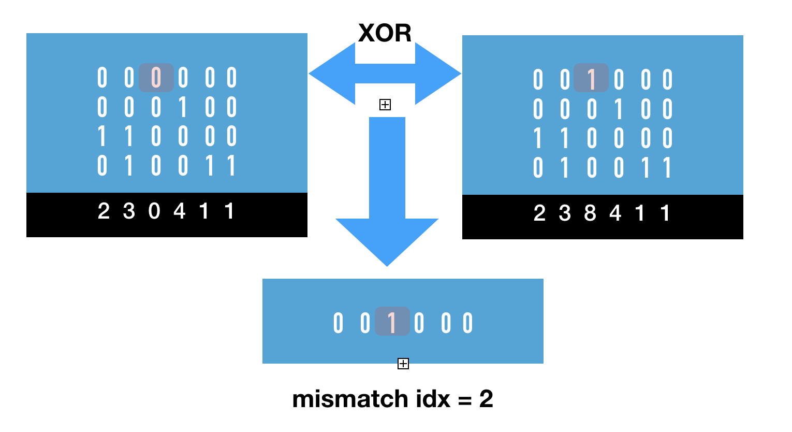

Version 5.4.0
Dec 8, 2019Release Notes
-
Fixed minor corner case bug in
bm::bvector<>::invert(). The bug was inversion of a vector of size() == 0. -
Minor performance improvements for
bm::bvector<>::find_first_mismatch(..)- find first mismatch between two bit-vectors. -
New bit-transposed sparse vector algorithm.
templateAlgorithm helps finding first mismatch between two bit-transposed vectors without reverse de-transposition, using operations on bit plains.bool sparse_vector_find_first_mismatch(const SV& sv1, const SV& sv2, typename SV::size_type& midx); -
New example for
bm::sparse_vector_find_first_mismatch(...)svsample09. Tech.Notes
Application notes on sparse vector mismatch search

Mismatch search is based on pairwise XOR search between bit-plains. Logical operations are easy to vectorize, so bit-plain based algorithm can be very efficient. We have to analyze all plains, but once at least one mismatch found we don’t have to do XOR search beyond it, so algorithm being O(N) has a property of search space reduction (data dependent). Sparse vector mismatch search can be used to construct a comparison function between long compressed strings. Once position of a mismatch is found, element comparison is easy.